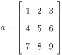
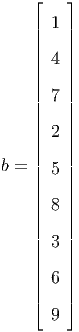
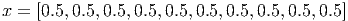
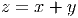
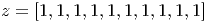
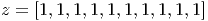
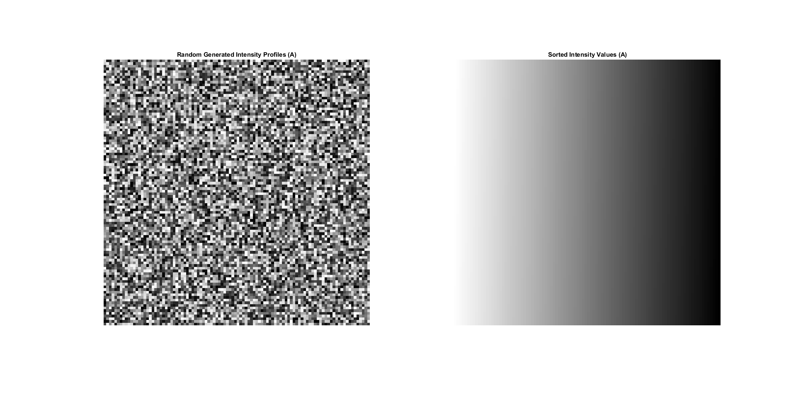

- Creates a row vector containing random permutations of numbers between 1 and 1000.
-
Line
1:
Creates
a
matrix:
 Line 2 assigns the second row of x to the variable b.
![b = [4, 5,6]](Murat_Ambarkutuk_PS01x.png)
-
Creates
a
matrix:

Line 2 assigns the all the values the variable b in column vector form.
 -
Line
1
creates
the
column
vector
f
[1×10]
with
the
normally
distributed
random
values.
Line 2 sets another variable and fills it with the elements of f which are above 0.
-
Line
1
sets
a
row
vector
[1×10]
with
zeros
and
adds
0.5
to
each
element
of
it.
 Line 2 creates another row vector with the same size of vector x [1×10], and multiplies each element of new row vector with 0.5.![y = [0.5,0.5,0.5,0.5,0.5,0.5, 0.5,0.5,0.5,0.5]](Murat_Ambarkutuk_PS05x.png)
  -
Line
1
creates
a
row
vector
[1×100]
which
contains
the
sequence
starting
from
1
to
100
(inclusive).
![a = [1,2,3,4 ...98,99,100 ]](Murat_Ambarkutuk_PS08x.png)

-
1%% clear workspace , and command window, close all figures already open.
2clear all, close all, clc;
3%% PS0-1.3a
4diceResults = diceTrials(99);
5%% PS0-1.3b
6% y = [1, 2, 3, 4, 5, 6]’
7y = (1:6)’;
8% z = [1, 3, 5; 2, 4, 6]
9z = reshape(y,[2,3]);
10%% PS0-1.3c
11% find the max value of matrice y and of which indice
12[x, I] = max(y);
13% convert indice to subscripts (row and column number)
14[r, c] = ind2sub(size(z),I);
15%% PS0-1.3d
16% create vector v = [1, 8, 8, 2, 1, 3, 9, 2]
17v = [1,8,8,2,1,3,9,2];
18% alter the value of vector x
19% the problem can be solved by two different approach
20% 1 - x = numel(v(v==1))
21% 2 - x = sum(v==1)
22x = numel(v(v==1));
- Randomly generated intensity and the result of sort process. 
-
1%% clear workspace , and command window, close all figures already open.
2clear all, close all, clc;
3figure(1);
4A = uint8(randi(255,[100,100]));
5subplot(2,2,1), imshow(A);
6title(’Random Generated Intensity Profiles (A)’)
7save(’inputAPS0Q1.mat’, ’A’);
8load(’inputAPS0Q1.mat’, ’A’);
9%% PS-0 4a
10A_sorted = sort(reshape(A,[numel(A), 1]), ’descend’);
11A_sorted = reshape(A_sorted, size(A));
12subplot(2,2,2), imshow(A_sorted);
13title(’Sorted Intensity Values (A)’)
14%% PS-0 4b
15bins = 20;
16maxA = max(A(:));
17minA = min(A(:));
18range = (maxA-minA)/bins;
19hist = zeros(1,bins);
20y = zeros(1,bins);
21for i=1:20
22 hist(i) = numel(A(A>=(minA+(i-1)*range) & A<(minA+(i)*range)));
23 y(i) = minA+(i-1)*range;
24end
25subplot(2,2,3), bar(y,hist, 0.8, ’r’);
26axis([0 255 min(hist) max(hist)*1.05])
27grid on;
28title(’Intensity Histogram of A (20 windows)’);
29%% PS-0 4c
30% X = A_sorted(size(A,1)/2:size(A,1), 0:size(A,2)/2);
31X = A_sorted(size(A_sorted,1)/2+1:size(A_sorted,1), 1:size(A_sorted,2)/2);
32save(’outputXPS0Q1.mat’,’X’);
33subplot(2,2,4), imagesc(X);
34%% PS-0 4d
35Y = A - mean(A(:));
36save(’outputYPS0Q1.mat’,’Y’);
37figure(2);
38imagesc(Y);
39%% PS-0 4e
40Z = uint8(zeros(size(A_sorted,1),size(A_sorted,2),3));
41ind = A(A>mean(A(:)));
42[u v] = ind2sub(size(A),ind);
43for i=1:numel(ind)
44 Z(u(i),v(i),:) = [255,0,0];
45end
46figure(4);
47imshow(Z);